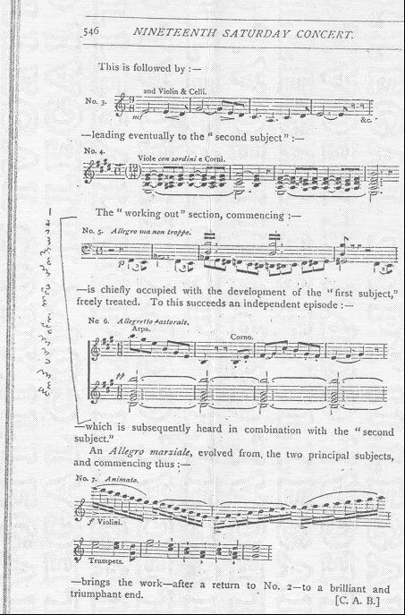
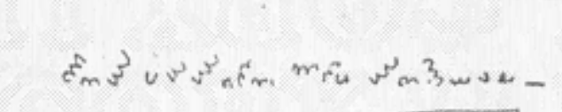
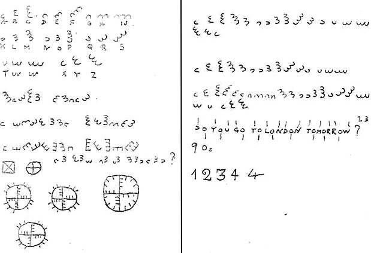
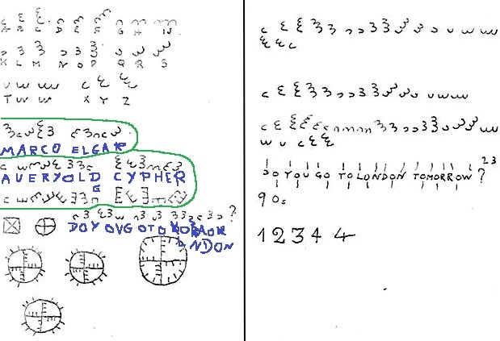
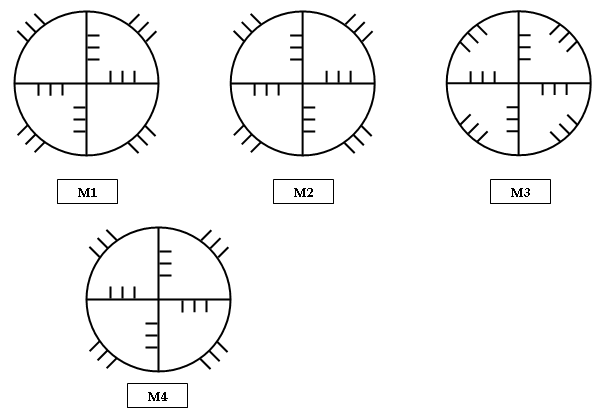

Elgar’s other ciphers
What else Elgar encrypted, and what he demonstrably knew how to do.
Dorabella is one item in a long habit. The same alphabet appears across roughly thirty-five years of Elgar's life, and the later appearances are the ones that tell you how it was built. Setting it beside the rest answers a question that matters for attacking it: what cipher techniques did Elgar actually possess? The answer is narrower and more interesting than the mythology suggests.
The habit, in order
About eighteen of the same characters pencilled in the margin of a Crystal Palace concert programme, eleven years before Dorabella. The earliest known use. Some sources date it 1885/86. unsolved
A Russian Nihilist cipher published as insoluble. Elgar broke it. solved by Elgar
The cards on which he recorded the Nihilist solution. not transcribed
87 characters to Dora Penny. Still unread. unsolved
A musical puzzle, not a written cipher. unsolved
Same alphabet, key written on the page, three short messages that decipher trivially. solved — known plaintext
1886 · The Liszt fragment


One claimed reading gives GETS YOU TO JOY, AND HYSTERIOUS
, which is not obviously English either. If the
same key fails on both texts, that is evidence about the key. If it works on one, that is a bigger result
than Dorabella itself. I collected this fragment but have not attacked it yet — it is on my list
([11]).
1896 · The one he demonstrably mastered
Schooling's Nihilist challenge — Pall Mall Magazine, April 1896
John Holt Schooling, a statistician and amateur conjurer, published a series called Secrets in Cipher. In part IV he presented a Russian Nihilist cipher and pronounced it insoluble. Elgar broke it — reportedly in a single night, making notes on sheet music for Cockaigne — and was proud of it for the rest of his life: he had the solution painted on a wooden box that is still in the Elgar Birthplace Museum, and made sure it appeared in Buckley's 1905 biography of him, his first.
Two details the sources disagree on, and how I settled them. The publication is given as the Pall Mall Gazette by Nautilus and as the Pall Mall Magazine by Cipher Mysteries — Schooling wrote for both. And the solution is variously said to have been painted on a wooden box and on a floor. The account with the surviving object settles both: Pall Mall Magazine, April 1896, and a box. (Cockaigne itself dates from 1900–01, so the sheet-music detail is hard to square with an 1896 solution; I keep it only as reported.)
How a Nihilist cipher works — and why it matters here
Build a 5 × 5 Polybius square with a mixed alphabet. Every letter becomes a pair of coordinates, its row and column. Convert a keyword the same way, then add the two number streams together.
Nihilist, 1896
A letter is fractionated into coordinates (row, column), then those numbers are operated on.
Dorabella, 1897
A letter is fractionated into coordinates (arc count, orientation) — radius and angle instead of row and column.
That is not a small coincidence. The year before he wrote Dorabella, Elgar spent a night mastering a cipher whose whole principle is turning a letter into a coordinate pair. A year later he sent Dora Penny a message in an alphabet that is a coordinate system. Whatever Dorabella turns out to be, the man writing it had coordinates on his mind.
The limit of the argument, stated honestly: Nihilist is a substitution cipher — fractionation plus arithmetic. It contains no transposition. The ciphers that add transposition to fractionation, bifid and ADFGX, were invented in 1901 and 1918 — after this letter. So the documented repertoire in 1897 is Polybius-style substitution, and any transposition theory is speculation about what he might have picked up elsewhere, not about what we know he could do.
1896 · The nine “Courage” cards
Elgar recorded the Nihilist solution on a set of nine cards — the same set usually called the Courage cards, not a separate artefact. The first card carries ten characters of the rotating-3 alphabet, described precisely enough to redraw: eight rotating triple-cup shapes, then an upward-facing double cup, then an upward-facing single cup.
A recreation drawn from the published description by my own renderer — not a reproduction of the card. The eight triple cups sweeping through all eight orientations look very much like a man demonstrating his own alphabet — writing out the ring in order — rather than sending a message. No agreed transcription of the full set exists, and Cipher Mysteries notes it has not seen the original in context.
1920s · The notebook — the Rosetta stone
Elgar used the same “rotating-3” alphabet as a plain substitution across two notebook pages — and, critically, wrote the key on the page itself. Those messages decipher trivially, and they are known: MARCO ELGAR (Marco was his dog), A VERY OLD CYPHER, and DO YOU GO TO LONDON TOMORROW? The notebook also carries the clock-face diagrams. This is why “the key is known” is so often asserted.


Why the notebook matters more than it looks
Those three messages are the only known plaintext in Elgar's own alphabet. They show what his cipher looks like when it is working normally — short English phrases repeating symbols the way English repeats letters. Here they are enciphered by my renderer, beside Dorabella:
MARCO ELGAR
A VERY OLD CYPHER
DO YOU GO TO LONDON TOMORROW
Enciphered with my snowflake fill, not with Elgar's own letter order — so the shapes differ from his page, but the repetition pattern (which glyph recurs where) is identical under any fixed key, and that is the thing worth comparing with Dorabella. My fill has no J and no Q; nothing here needs them.
The circle diagrams

1899 · The other unsolved one — the Enigma theme
In the 1899 programme note for the Enigma Variations, Elgar wrote that a larger theme “goes”
through and over the whole set but is never played, and that the theme harbours a “dark saying”. He never
explained either, and told Dora Penny — of all people — I'm surprised. I thought that you of all people
would guess it.
| proposed theme | status | note |
|---|---|---|
| Auld Lang Syne | rejected by Elgar | Put to him directly; he denied it. |
| Rule, Britannia!, Pop Goes the Weasel, God Save the King | unconfirmed | Popular candidates, none accepted. |
| Pergolesi, Stabat Mater | unconfirmed | Argued on contrapuntal grounds. |
| Ein feste Burg (Luther) | contested | Advanced at length by Robert Padgett. See the caution below. |
| No tune at all — friendship, or the artist's loneliness | unfalsifiable | Fits his own remark about the theme standing for the loneliness of the artist, but cannot be tested. |
Keep the two puzzles apart. The Enigma theme (1899, musical, a claim about counterpoint) and Dorabella (1897, 87 written symbols) are different problems in different media. Solving one would tell you nothing certain about the other, and conflating them is the commonest error in the popular literature.
Cryptography that was not cryptography
The same instinct runs through work he never called a cipher at all, and it is the best evidence of how his mind actually worked.
- Musical cryptograms. He built an allegretto on the letters
G-E-D-G-E, the surname of a local headmaster's daughters — spelling a name in notes. - Carice. His daughter's name, made by contracting Caroline and Alice.
- E.D.U. He signed his own variation with his wife's pet name for him, “Edoo”.
- Nimrod. Jaeger means hunter in German; Nimrod was the mighty hunter of Genesis. A bilingual pun used as a memorial.
- Asterisks. Variation XIII is marked
* * *instead of initials — a name deliberately withheld.
A man who does all of that for fun is exactly the man who sends a friend a page of coordinates and never explains it.
A caution about the maximal claims
One researcher, Robert Padgett, has published a decade of work arguing that the Enigma Variations contain more than seventy cryptograms — a musical Polybius box cipher in the opening bars, ciphers formed from letters of adjacent movement titles, and a solution of Ein feste Burg as the hidden theme. His readings of Dorabella itself are on [04].
Treated here as contested, for a specific methodological reason rather than dismissal. The stated method includes rearranging recovered letters into anagrams. Anagramming a short letter pool has enough freedom to produce a meaningful phrase from almost any starting material, so results obtained that way cannot be falsified by the evidence that produced them. The volume of claimed cryptograms is itself the warning sign: a method that finds seventy of something in a piece of music is usually measuring its own flexibility. That is the same objection I apply to my own work, which is why my tools refuse to search for transpositions.
What this means for attacking Dorabella
- He worked in coordinates. Documented, 1896, a year before. The polar key is not a modern imposition on the problem.
- He liked puns and bilingual jokes. A plaintext that is not straightforward English is entirely in character.
- He used the same alphabet for thirty-five years, and wrote its key down in the 1920s. The alphabet is probably not the secret.
- Nothing documents him using a transposition. If Dorabella has a second layer, we have no evidence he had the technique — which is a reason for caution, not exclusion. My transposition bench exists to test specific rules, never to search for one ([13]).
Sources for this page
Wikipedia — Nihilist cipher · Wikipedia — Enigma Variations · Cipher Mysteries — Elgar's other ciphertexts · Nautilus — The Artist of the Unbreakable Code · Robert Padgett — Elgar's Enigma Theme Unmasked (the contested maximal reading) · Schneier on Security — Edward Elgar's Ciphers
The Nautilus article is useful on Elgar's personality and the Schooling challenge but does not cover the painted box, the index cards or the notebooks; those come from Cipher Mysteries and the Cipher Foundation.